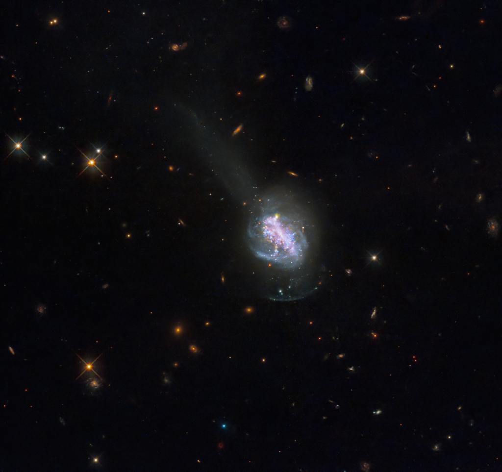

Merged Galaxy Seen by Hubble
NASA
This new NASA Hubble Space Telescope image shows ESO 185-IG013, a luminous blue compact galaxy (BCG). BCGs are nearby galaxies that show an intense burst of star formation. They are unusually blue in visible light, which sets them apart from other high-starburst…